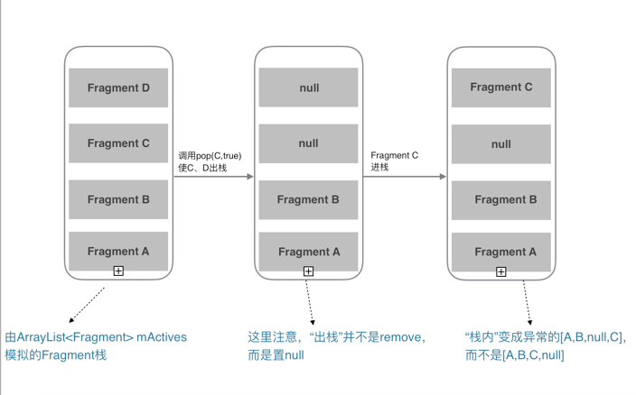

Fragment全解析系列（一）：那些年踩过的坑
Fragment系列文章：
本篇主要介绍一些最常见的Fragment的坑以及官方Fragment库的那些自身的BUG，这些BUG在你深度使用时会遇到，比如Fragment嵌套时或者单Activity＋多Fragment架构时遇到的坑。
如果想看较为实用的技巧，请直接看第二篇
Fragment是可以让你的app纵享丝滑的设计，如果你的app想在现在基础上性能大幅度提高，并且占用内存降低，同样的界面Activity占用内存比Fragment要多，响应速度Fragment比Activty在中低端手机上快了很多，甚至能达到好几倍！如果你的app当前或以后有移植平板等平台时，可以让你节省大量时间和精力。
简陋的目录
- 1、getActivity()空指针
- 2、Fragment重叠异常-----正确使用hide、show的姿势
- 3、Fragment嵌套的那些坑
- 4、不靠谱的出栈方法remove()
- 5、多个Fragment同时出栈的那些深坑BUG
- 6、超级深坑 Fragment转场动画
开始之前
最新版知乎，单Activity多Fragment的架构，响应可以说非常“丝滑”，非要说缺点的话，就是没有转场动画，并且转场会有类似闪屏现象。我猜测可能和Fragment转场动画的一些BUG有关。（这系列的最后一篇文章我会给出我的解决方案，可以自定义转场动画，并能在各种特殊情况下正常运行。）
但是！Fragment相比较Activity要难用很多，在多Fragment以及嵌套Fragment的情况下更是如此。
更重要的是Fragment的坑真的太多了，看Square公司的这篇文章吧，Square：从今天开始抛弃Fragment吧！
当然，不能说不再用Fragment，Fragment的这些坑都是有解决办法的，官方也在逐步修复一些BUG。
下面罗列一些，有常见的，也有极度隐蔽的一些坑，也是我在用单Activity多Fragment时遇到的坑，可能有更多坑可以挖掘...
在这之前为了方便后面文章的介绍，先规定一个“术语”，安卓app有一种特殊情况，就是 app运行在后台的时候，系统资源紧张的时候导致把app的资源全部回收（杀死app的进程），这时把app再从后台返回到前台时，app会重启。这种情况下文简称为：“内存重启”。
在系统要把app回收之前，系统会把Activity的状态保存下来，Activity的FragmentManager负责把Activity中的Fragment保存起来。在“内存重启”后，Activity的恢复是从栈顶逐步恢复，Fragment会在宿主Activity的onCreate方法调用后紧接着恢复（从`onAttach生命周期开始）。
getActivity()空指针
可能你遇到过getActivity()返回null，或者平时运行完好的代码，在“内存重启”之后，调用getActivity()的地方却返回null，报了空指针异常。
大多数情况下的原因：你在调用了getActivity()时，当前的Fragment已经onDetach()了宿主Activity。 比如：你在pop了Fragment之后，该Fragment的异步任务仍然在执行，并且在执行完成后调用了getActivity()方法，这样就会空指针。
- 解决办法：
更"安全"的方法：(对于Fragment已经onDetach这种情况，我们应该避免在这之后再去调用宿主Activity对象，比如取消这些异步任务，但我们的团队可能会有粗心大意的情况，所以下面给出的这个方案会保证安全)
在Fragment基类里设置一个Activity mActivity的全局变量，在onAttach(Activity activity)里赋值，使用mActivity代替getActivity()，保证Fragment即使在onDetach后，仍持有Activity的引用（有引起内存泄露的风险，但是相比空指针闪退，这种做法“安全”些），即：
protected Activity mActivity;
@Override
public void onAttach(Activity activity) {
super.onAttach(activity);
this.mActivity = activity;
}
/**
* 如果你用了support 23的库，上面的方法会提示过时，有强迫症的小伙伴，可以用下面的方法代替
*/
@Override
public void onAttach(Context context) {
super.onAttach(context);
this.mActivity = (Activity)context;
}
Fragment重叠异常-----正确使用hide、show的姿势
如果你add()了几个Fragment，使用show()、hide()方法控制，比如微信、QQ的底部tab等情景，如果你什么都不做的话，在“内存重启”后回到前台，app的这几个Fragment界面会重叠。
原因是FragmentManager帮我们管理Fragment,每当我们离开该Activity，FragmentManager都会保存它的Fragments，当发生“内存重启”，他会从栈底向栈顶的顺序恢复Fragments，并且全都都是以show()的方式，所以我们看到了界面重叠。（如果是replace，恢复顺序和Activity一致：栈顶先恢复，当pop返回上一个Fragment时，再恢复这个Fragment）
这里给出2个解决方案：（为方便描述，以下皆不考虑Fragment嵌套的情况）
1、是大家比较熟悉的 findFragmentByTag：
即在add()或者replace()时绑定一个tag，一般我们是用fragment的类名作为tag，然后在发生“内存重启”时，通过findFragmentByTag找到对应的Fragment，并hide()需要隐藏的fragment。
下面是个标准恢复写法：
@Override
protected void onCreate(Bundle savedInstanceState) {
super.onCreate(savedInstanceState);
setContentView(R.layout.activity);
TargetFragment targetFragment;
HideFragment hideFragment;
if (savedInstanceState != null) { // “内存重启”时调用
targetFragment = getSupportFragmentManager().findFragmentByTag(targetFragment.getClass().getName);
hideFragment = getSupportFragmentManager().findFragmentByTag(hideFragment.getClass().getName);
// 解决重叠问题
getFragmentManager().beginTransaction()
.show(targetFragment)
.hide(hideFragment)
.commit();
}else{ // 正常时
targetFragment = TargetFragment.newInstance();
hideFragment = HideFragment.newInstance();
getFragmentManager().beginTransaction()
.add(R.id.container, targetFragment, targetFragment.getClass().getName())
.add(R.id,container,hideFragment,hideFragment.getClass().getName())
.hide(hideFragment)
.commit();
}
}
如果你想恢复到用户离开时的那个Fragment的界面，你还需要在onSaveInstanceState(Bundle outState)里保存离开时的那个见面的tag或下标，在onCreate“内存重启”代码块中，取出tag/下标，进行恢复。
2、使用getSupportFragmentManager().getFragments()恢复
通过getFragments()可以获取到当前FragmentManager管理的栈内所有Fragment。
标准写法如下：
@Override
protected void onCreate(Bundle savedInstanceState) {
super.onCreate(savedInstanceState);
setContentView(R.layout.activity);
TargetFragment targetFragment;
HideFragment hideFragment;
if (savedInstanceState != null) { // “内存重启”时调用
List<Fragment> fragmentList = getSupportFragmentManager().getFragments();
for (Fragment fragment : fragmentList) {
if(fragment instanceof TartgetFragment){
targetFragment = (TargetFragment)fragment;
}else if(fragment instanceof HideFragment){
hideFragment = (HideFragment)fragment;
}
｝
// 解决重叠问题
getFragmentManager().beginTransaction()
.show(targetFragment)
.hide(hideFragment)
.commit();
}else{ // 正常时
targetFragment = TargetFragment.newInstance();
hideFragment = HideFragment.newInstance();
// 这里add时，tag可传可不传
getFragmentManager().beginTransaction()
.add(R.id.container)
.add(R.id,container,hideFragment)
.hide(hideFragment)
.commit();
}
}
从代码看起来，这种方式比较复杂，但是这种方式在一些场景下比第一种方式更加简便有效。
我会在下一篇中介绍在不同场景下如果选择，何时用findFragmentByTag()，何时用getFragments()恢复。
顺便一提，有些小伙伴会用一种并不合适的方法恢复Fragment，虽然效果也能达到，但并不恰当。即：
// 保存
@Override
protected void onSaveInstanceState(Bundle outState) {
super.onSaveInstanceState(outState);
getSupportFragmentManager().putFragment(outState, KEY, targetFragment);
}
// 恢复
@Override
protected void onCreate(Bundle savedInstanceState) {
super.onCreate(savedInstanceState);
setContentView(R.layout.activity_scrolling);
if (savedInstanceState != null) {
Fragment targetFragment = getSupportFragmentManager().getFragment(savedInstanceState, KEY);
}
｝
如果仅仅为了找回栈内的Fragment，使用putFragment(bundle, key, fragment)保存fragment，是完全没有必要的；因为FragmentManager在任何情况都会帮你存储Fragment，你要做的仅仅是在“内存重启”后，找回这些Fragment即可。
。
Fragment嵌套的那些坑
其实一些小伙伴遇到的很多嵌套的坑，大部分都是由于对嵌套的栈视图产生混乱，只要理清栈视图关系，做好恢复相关工作以及正确选择是使用getFragmentManager()还是getChildFragmentManager()就可以避免这些问题。
这部分内容是我们感觉Fragment非常难用的一个点，我会在下一篇中，详细介绍使用Fragment嵌套的一些技巧，以及如何清晰分析各个层级的栈视图。
- 附：startActivityForResult接收返回问题
在support 23.2.0以下的支持库中，对于在嵌套子Fragment的
startActivityForResult ()，会发现无论如何都不能在onActivityResult()中接收到返回值，只有最顶层的父Fragment才能接收到，这是一个support v4库的一个BUG，不过在前两天发布的support 23.2.0库中，已经修复了该问题，嵌套的子Fragment也能正常接收到返回数据了!
不靠谱的出栈方法remove()
如果你想让某一个Fragment出栈，使用remove()并不靠谱。它并不能真正将Fragment从栈内移除，如果你在2秒后（确保Fragment事务已经完成）打印getSupportFragmentManager().getFragments()，会发现该Fragment依然存在。并且依然可以返回到被remove的Fragment，而且是空白页面。
popBackStack()系列方法才能真正出栈，这也就引入下一个深坑，popBackStack(String tag,int flags)等系列方法的BUG。
多个Fragment同时出栈的那些深坑BUG
在Fragment库中如下4个方法是有BUG的：
- 1、popBackStack(String tag,int flags)
- 2、popBackStack(int id,int flags)
- 3、popBackStackImmediate(String tag,int flags)
- 4、popBackStackImmediate(int id,int flags)
上面4个方法作用是，出栈到tag/id的fragment，即一次多个Fragment被出栈。
1、FragmentManager栈中管理fragment下标位置的数组ArrayList mAvailIndeices的BUG
下面的方法FragmentManagerImpl类方法，产生BUG的罪魁祸首是管理Fragment栈下标的mAvailIndeices属性：
void makeActive(Fragment f) {
if (f.mIndex >= 0) {
return;
}
if (mAvailIndices == null || mAvailIndices.size() <= 0) {
if (mActive == null) {
mActive = new ArrayList<Fragment>();
}
f.setIndex(mActive.size(), mParent);
mActive.add(f);
} else {
f.setIndex(mAvailIndices.remove(mAvailIndices.size()-1), mParent);
mActive.set(f.mIndex, f);
}
if (DEBUG) Log.v(TAG, "Allocated fragment index " + f);
}
上面代码最终导致了栈内顺序不正确的问题，如下图

上面的这个情况，会一次异常，一次正常。带来的问题就是“内存重启”后，各种异常甚至Crash。
我发现这BUG的时候，我也懵比了，幸好，stackoverflow上有大神给出了解决方案！hack FragmentManagerImpl的mAvailIndices，对其进行一次Collections.reverseOrder()降序排序，保证栈内Fragment的index的正确。
public class FragmentTransactionBugFixHack {
public static void reorderIndices(FragmentManager fragmentManager) {
if (!(fragmentManager instanceof FragmentManagerImpl))
return;
FragmentManagerImpl fragmentManagerImpl = (FragmentManagerImpl) fragmentManager;
if (fragmentManagerImpl.mAvailIndices != null && fragmentManagerImpl.mAvailIndices.size() > 1) {
Collections.sort(fragmentManagerImpl.mAvailIndices, Collections.reverseOrder());
}
}
}
使用方法就是通过popBackStackImmediate(tag/id)多个Fragment后，调用
hanler.post(new Runnable(){
@Override
public void run() {
FragmentTransactionBugFixHack.reorderIndices(fragmentManager));
}
});
2、popBackStack的BUG
popBackStack和popBackStackImmediate的区别在于前者是加入到主线队列的末尾，等其它任务完成后才开始出栈，后者是立刻出栈。
但是！！！在我使用的过程中我发现，popBackStack(tag/id)这2个方法是有BUG的！
先不说有转场动画情况下的各种深坑BUG...
如果你popBackStack多个Fragment后，紧接着beginTransaction()add新的一个Fragment，接着发生了“内存重启”后，你再执行popBackStack()，app就会Crash。
所以，如果你想出栈多个Fragment，你应尽量使用popBackStackImmediate(tag/id)，而不是popBackStack(tag/id)，如果你想在出栈后，立刻beginTransaction()开始一项事务，你应该把事务的代码post到主线程的消息队列里，下一篇有详细描述。
超级深坑 Fragment转场动画
如果你的Fragment没有转场动画，或者使用setCustomAnimations(enter, exit)的话，那么上面的那些坑解决后，你可以愉快的玩耍了。
getFragmentManager().beginTransaction()
.setCustomAnimations(enter, exit)
// 如果你有通过tag/id同时出栈多个Fragment的情况时，
// 请谨慎使用.setCustomAnimations(enter, exit, popEnter, popExit)
// 因为在出栈多Fragment时，伴随出栈动画，会在某些情况下发生异常
// 你还需要搭配Fragment的onCreateAnimation()临时取消出栈动画
总结起来就是Fragment没有出栈动画的话，可以避免很多坑。
如果想让出栈动画运作正常的话，需要使用Fragment的onCreateAnimation中控制动画。
@Override
public Animation onCreateAnimation(int transit, boolean enter, int nextAnim) {
// 此处设置动画
}
但是用代价也是有的，你需要解决出栈动画带来的几个坑。
1、pop多个Fragment时转场动画 带来的问题
在使用 pop(tag/id)出栈多个Fragment的这种情况下，务必不能设定转场动画；
原因在于这种情景下，如果发生“内存重启”后，Fragment并不会被FragmentManager正常保存下来。
2、进入新的Fragment并立刻关闭当前Fragment 时的一些问题
（1）如果你想从当前Fragment进入一个新的Fragment，并且同时要关闭当前Fragment。由于数据结构是栈，所以正确做法是先pop，再add，但是转场动画会有覆盖的不正常现象，你需要特殊处理，不然会闪屏！
(2）Fragment的根布局要设置
android:clickable = true，原因是在pop后又立刻add新的Fragment时，在转场动画过程中，如果你的手速太快，在动画结束前你多点击了一下，上一个Fragment的可点击区域可能会在下一个Fragment上依然可用。
总结
看了上面的介绍，你可能会觉得Fragment有点可怕。
但是我想说，如果你只是浅度使用，比如一个Activity容器包含列表Fragment＋详情Fragment这种简单情景下，不涉及到popBackStack/Immediate(tag/id)这些的方法，还是比较轻松使用的，出现的问题，网上都可以找到解决方案。
但是如果你的Fragment逻辑比较复杂，有特殊需求，或者你的app架构是仅有一个Activity + 多个Fragment，上面说的这些坑，你都应该全部解决。
在下一篇中，介绍了一些非常实用的使用技巧，包括如何解决Fragment嵌套、各种环境、组件下Fragment的使用等技巧，推荐阅读！
还有一些比较隐蔽的问题，不影响app的正常运行，仅仅是一些显示的BUG，并没有在上面介绍，在本系列的最后一篇，我给出了我的解决方案，一个我封装的Fragmentation库，解决了所有动画问题，非常适合单Activity+多Fragment 或者 多模块Activity＋多Fragment的架构。有兴趣的可以看看 :)